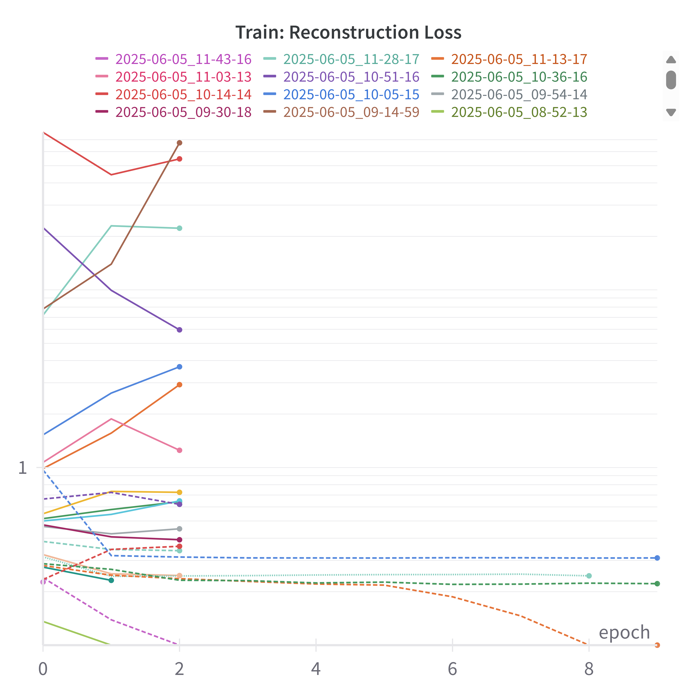

Stable Diffusion Report
In stable diffusion, you must train two different components, the autoencoder and the diffusion model.
- Autoencoder to compress the high resolution image into something less computationally required for generation later on.
- Diffusion model to learnt to generate an image in the latent space from noise. This report goes over the history and progress of generating a non-existing image.
For each models, the following general steps were followed:
- Find a set of hyperparameter configuration that generally works on about 30 epochs.
- Hyperparameter Optimize (Sweep) centered around that found hyperparameter configuration. The target loss after 10 epochs is recorded (with the exception of early stopping pruning)
- The optimized configuration is trained for 50 or 100 epochs.
AutoEncoder
Vector-Quantized Variational Auto-Encoder (VQVAE) was used to convert images into smaller sized latent images. VQVAE leveraged codebook look up that discretized latent values and allowed a more representative latent space of the original image. The autoencoder first encodes the image into a pre-quantized latent image, quantize through looking-up pixel-embedding to the nearest codebook embedding, and decode the post-quantized latent image where the losses are calculated. To ensure the pre-quantized pixel-embedding does not stray too far from the embedding, codebook+commitment losses are calculated and backpropagated along with the image-related losses.
Hyperparameter Optimization:
Sweep Configurations (Hyperparameter range)
program: "src/train_ddpm.py"
name: sweep_ddpm
method: bayes
metric:
name: "Validation/Loss-ddpm"
goal: minimize
parameters:
models.diffusion.down_channels:
values:
- [256, 384, 512, 768]
- [128, 256, 512, 768]
- [64, 128, 512, 768]
models.diffusion.mid_channels:
values:
- [768, 512]
- [768, 512, 512]
models.diffusion.t_emb_dim:
distribution: q_log_uniform_values
min: 128
max: 1024
models.diffusion.num_down_layers:
distribution: int_uniform
min: 1
max: 4
models.diffusion.num_mid_layers:
distribution: int_uniform
min: 1
max: 4
models.diffusion.num_up_layers:
distribution: int_uniform
min: 1
max: 4
models.diffusion.num_heads:
values: [2, 4, 8, 16, 32]
models.diffusion.conv_out_channels:
distribution: q_log_uniform_values
min: 32
max: 512
q: 32
noise_scheduler.num_timesteps:
distribution: q_log_uniform_values
min: 500
max: 3000
noise_scheduler.beta_start:
distribution: log_uniform_values
min: 1e-5
max: 1e-3
noise_scheduler.beta_end:
distribution: log_uniform_values
min: 1e-3
max: 1e-1
ddpm.lr:
distribution: log_uniform_values
min: 1e-6
max: 1e-3
datamodule.batch_size:
distribution: q_log_uniform_values
min: 16
max: 128
early_terminate:
type: "hyperband"
min_iter: 3
command:
- ${env}
- ${interpreter}
- ${program}
- ${args_no_hyphens}
Adversarial Losses

Codebook and Commitment Losses
Perceptual Losses

Reconstruction Losses

Notable Sweep Configurations
The following are some notable directions the vqvae began to learn the dataset to latent space conversion.
Run 1: 2025-06-05_02-06-18

Comparing the original image (top row), latent image (middle row), reconstructed image (bottom row) for run 1: 2025-06-05_02-06-18. Epoch: 10
Parameter Configurations (Run 1)
datamodule:
batch_size: 16
models:
autoencoder:
beta: 0.031434697351974974
down_channels: [16, 64, 128, 256]
embedding_dim: 6
num_down_layers: 4
num_mid_layers: 1
num_up_layers: 1
num_embeddings: 3708
num_heads: 4
discriminator:
conv_channels: [16, 32, 64]
systems:
loss_weights:
adversarial: 0.02277441690906937
internal: 18.28967516429656
perceptual: 0.0002447386292215411
reconst: 0.14919996447016615
lr:
d: 3.6026788983424064e-06
g: 3.6362412179266015e-05
It can be noted that the reconstructed images in this run displays a generic face failing to generate any unique features for each image. The output shows a 'mean' or 'averaged' face, common when the autoencoder is not able to capture distinct features and resort to a single averaged face where the loss is the lowest for all images.
A reason for this failure is likely due to the high internal loss weight of 18.29, compared to the other loss weights of adversarial, perceptual and reconstruction where they are 0.023, 0.00024, and 0.15 respectively. The dominant internal loss (the sum of codebook and commitment loss with beta=0.03) renders the visual losses negligible which focuses the autoencoder in learning a stable yet meaningless codebook. This as a result teaches the model to produce a safe and averaged image to the overly stablized latent space.
Run 2: 2025-06-05_03-23-41

Comparing the original image (top row), latent image (middle row), reconstructed image (bottom row) for run 2: 2025-06-05_03-23-41. Epoch: 10
Parameter Configurations (Run 2)
datamodule:
batch_size: 16
models:
autoencoder:
beta: 0.07830023604089383
down_channels: [16, 64, 128, 256]
embedding_dim: 6
num_down_layers: 4
num_mid_layers: 2
num_up_layers: 2
num_embeddings: 2327
num_heads: 2
discriminator:
conv_channels: [64, 128, 256, 512]
systems:
loss_weights:
adversarial: 0.00008909160625646387
internal: 0.0823042928039229
perceptual: 0.002681812647958391
reconst: 90.66739309587147
lr:
d: 3.637625577905393e-06
g: 3.637665086781343e-05
Run 2 shows improvement in reconstruction quality in-comparison to the previous run 1. The output images are relatively recognizable - showing uniquness to a certain extent - indicating the latent space holds a form of original image information. With that said, the reconstructed images lacks detail and appears to be blurry. The latent images displays extreme colors which could suggest the models inability to encode and compress the image in a meaningful manner.
Blurry images are common in high reconstruction loss weight as the MSELoss focuses on structure and color (where models commonly lean towards average pixel values), and fails to capture high-frequency details. The latent image's appears to be noisy as the codebook embeddings is disorganized and is used in a patch-by-patch manner in solving the pixel-matching puzzle instead of abstract features. Furthermore, the perceptual and adversarial losses are far too insignficiant for the model to weight importance on sharp and realistic textures. The model in this case is more of a pixel matcher than a image compressor preserving important information.
Run 3: 2025-06-05_05-12-17
Comparing the original image (top row), latent image (middle row), reconstructed image (bottom row) for run 3: 2025-06-05_05-12-17. Epoch: 10
Parameter Configurations (Run 3)
datamodule:
batch_size: 16
models:
autoencoder:
beta: 0.033203203889255975
down_channels: [16, 64, 128, 256]
embedding_dim: 6
num_down_layers: 2
num_mid_layers: 2
num_up_layers: 2
num_embeddings: 5377
num_heads: 32
discriminator:
conv_channels: [16, 32, 64]
systems:
loss_weights:
adversarial: 0.0002824064862999839
internal: 8.710494682214064
perceptual: 0.0002784928081396848
reconst: 0.5440532552186204
lr:
d: 1.424399124491354e-06
g: 0.00010944209261365034
The results in run3 is the best so far. Despite the color imbalance, each reconstructed image maintains the structural and peceptual detail of the original. We may observe the codebook embeddings in the latent images holding less variance in values compared to run2 and run4, which implies the strength that is being applied to the codebook+commitment losses.
The issue in run 3 is mainly the imbalanaced loss weighting, where similar to run 1, the internal loss is the most dominant. The difference between the losses is not as severe in this case, allowing a more accurate sharp reconstruction, but primarily lacks in coloring and the reconstruction seems to be more faded out / brown-ish tinted. Indicating the reconstruction loss could be weighted more to focus on color. The dominant internal loss preoccupies the model to focus o n codeboook usage rather than the image quality. This configuration has a high codebook capacity with 5377 number of embeddings and a 32-headed attention mechanism which should effectively capture features as they do much better comparing the run 2.
Run 4: 2025-06-05_08-52-13

Comparing the original image (top row), latent image (middle row), reconstructed image (bottom row) for run 4: 2025-06-05_08-52-13. Epoch: 10
Parameter Configurations (Run 4)
datamodule:
batch_size: 64
models:
autoencoder:
beta: 0.6443345881327225
down_channels: [32, 64, 128, 256]
embedding_dim: 5
num_down_layers: 1
num_mid_layers: 4
num_up_layers: 2
num_embeddings: 4014
num_heads: 4
discriminator:
conv_channels: [64, 128, 256]
systems:
loss_weights:
adversarial: 0.7760262788835401
internal: 4.333458542618579
perceptual: 0.0012227879638211584
reconst: 65.10522954739554
lr:
d: 9.227559277019527e-06
g: 0.0014256583051953369
Run4 had the best configuration out of the tested ones. We may also observe this from the comparison image above. The images produced substantially sharper and retains more details with accurate color reconstruction. The model is able to capture facial expressions, positions, and textural details like hair. The latent images appears to be vibrant and distinctly structured, indication good latent compression. Similar to run 3, the latent images visibly correspond to the input feature semantics (face, eyes, hair, and clothes).
The reason of this apparent success is due to a good, balanced, and effective configuration of losses and model architecture. Even though the reconstruction loss is weighted high, strong adversarial weight contributed to ensure human-like features taking advantage and unravelling from what is learned by discriminator.
Final Model
Sweep Configuration
Denoising Diffusion Probabilitic Model
Hyperparameter Optimization


Notable Sweep Configuration
Out of the 30 or so run trials, I ran 2 of the best configurations up until 100 epochs. The results are the following.
Run1: Giddy Grass 43

Hyperparameter Configuration
datamodule:
batch_size: 56
num_workers: 4
ddpm:
lr: 0.00013256608655142174
models:
diffusion:
conv_out_channels: 352
down_channels:
- 256
- 384
- 512
- 768
mid_channels:
- 768
- 512
num_down_layers: 1
num_mid_layers: 2
num_up_layers: 4
num_heads: 2
t_emb_dim: 309
noise_scheduler:
beta_start: 0.00010505422393815704
beta_end: 0.06392103975835639
num_timesteps: 2617
Run2: Eager Sound 42
Hyperparameter Configuration
datamodule:
batch_size: 25
num_workers: 4
ddpm:
lr: 7.016014614095296e-06
models:
diffusion:
conv_out_channels: 336
down_channels:
- 128
- 256
- 512
- 768
mid_channels:
- 768
- 512
- 512
num_down_layers: 1
num_mid_layers: 4
num_up_layers: 1
num_heads: 4
t_emb_dim: 743
noise_scheduler:
beta_start: 0.000986132869834486
beta_end: 0.08828010703949035
num_timesteps: 929
Conclusion
Oh my god I just noticed I needed to quantize the final output for the best final results.